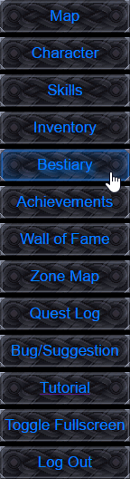
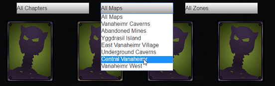
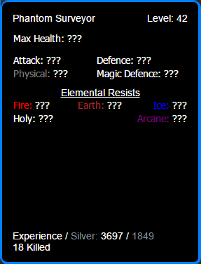

This screen allows you to track and learn about all the enemies you come across in your travels. The filters at the top allow you to sort what you see by chapter, zone, and map.
Any monsters you have not come across in a zone appear as a blank card with all questionmarks. The more of an enemy you kill, the more you learn about it, to see all you've learned hover your mouse over an enemy card, and look in the bottom right information panel.